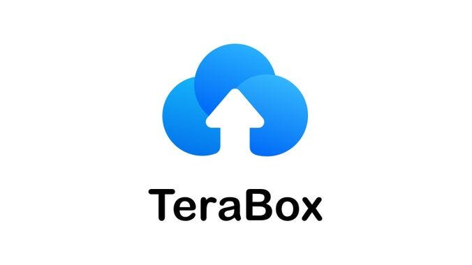

In today’s fast-paced digital world, downloading and managing files efficiently is more important than ever. Whether you’re a student, professional, or just someone who loves organizing their digital life, having a reliable tool to download files quickly and securely is a game-changer. TeraBox Online Downloader a user-friendly, efficient, and downright awesome solution for all your downloading needs. In this article, we’ll dive into the many positive aspects of TeraBox Online Downloader, why it’s a must-have tool, and how it can make your life easier. And don’t worry, we’ll keep it simple, fun, and easy to understand!
Before we get into the nitty-gritty, let’s start with the basics. TeraBox Online Downloader is a web-based tool designed to help users download files from TeraBox—a popular cloud storage platform—quickly and effortlessly. TeraBox itself offers a whopping 1 TB of free cloud storage, making it a favorite among users who need to store and share large files. The TeraBox Online Downloader complements this by providing a seamless way to download those files directly to your device without any hassle.
Now, let’s explore why TeraBox Online Downloader is winning hearts worldwide!
Let’s face it—nobody likes complicated tools that require a PhD to operate. The beauty of TeraBox Online Downloader lies in its simplicity. Even if you’re not tech-savvy, you’ll find it a breeze to use. Here’s how it works:
No complicated steps, no confusing menus—just straightforward functionality that gets the job done. It’s like having a personal assistant who knows exactly what you need!
We’ve all been there: staring at a slow progress bar, wondering if the file will ever finish downloading. With TeraBox Online Downloader, slow downloads are a thing of the past. The tool is optimized to deliver blazing-fast download speeds, so you can get your files in record time. Whether you’re downloading a large video, a high-resolution image, or an important document, TeraBox Online Downloader ensures you won’t be left twiddling your thumbs.
One of the best things about TeraBox Online Downloader is that it’s entirely web-based. That means you don’t need to download or install any software on your device. Simply open your browser, head to the TeraBox Online Downloader website, and you’re good to go. This not only saves storage space on your device but also eliminates the risk of downloading potentially harmful software. It’s a win-win!
Whether you’re using a Windows PC, Mac, Android phone, or iPhone, TeraBox Online Downloader has got you covered. The tool is designed to work seamlessly across all devices and operating systems. So, no matter what gadget you’re using, you can enjoy the convenience of downloading files from TeraBox without any compatibility issues. It’s like having a universal remote for your downloads!
When it comes to downloading files online, security is a top concern. The good news is that TeraBox Online Downloader takes your privacy and security seriously. The tool uses advanced encryption protocols to ensure that your downloads are safe and secure. You can rest easy knowing that your files won’t fall into the wrong hands. Plus, the platform is reliable, so you won’t have to worry about sudden crashes or interruptions during your download.
TeraBox Online Downloader is incredibly versatile when it comes to file formats. Whether you’re downloading videos, music, documents, images, or even compressed files like ZIP or RAR, this tool can handle it all. This versatility makes it a one-stop solution for all your downloading needs. No need to switch between different tools for different file types—TeraBox Online Downloader has got you covered.
Yes, you read that right—TeraBox Online Downloader is completely free to use! There are no hidden fees, no subscription plans, and no annoying ads cluttering the interface. You get access to all the amazing features without spending a dime. In a world where most good things come with a price tag, TeraBox Online Downloader is a refreshing exception.
Ever tried downloading a large file only to be hit with a “file size limit exceeded” message? It’s frustrating, to say the least. Thankfully, TeraBox Online Downloader doesn’t impose any file size limits. Whether you’re downloading a 100 MB document or a 10 GB video, the tool handles it with ease. This makes it perfect for users who frequently work with large files.
First impressions matter, and TeraBox Online Downloader nails it with its clean, intuitive interface. The design is simple yet effective, making it easy for users of all skill levels to navigate. Everything is laid out logically, so you won’t have to waste time searching for buttons or options. It’s like walking into a well-organized room—everything is right where you need it.
The team behind TeraBox Online Downloader is constantly working to improve the tool and add new features. Regular updates ensure that the platform stays up-to-date with the latest technology and user needs. This commitment to continuous improvement means you’ll always have access to the best possible version of the tool.
TeraBox Online Downloader isn’t just great for downloading files—it’s also an excellent tool for sharing them. Once you’ve downloaded a file, you can easily share it with friends, family, or colleagues. The tool ensures that the shared files retain their original quality, so you don’t have to worry about compression or loss of data. It’s like passing a physical file to someone, but without the hassle of printing or mailing!
If you’re a student or professional, you know how important it is to have quick access to files. TeraBox Online Downloader is a lifesaver in this regard. Whether you’re downloading lecture notes, research papers, presentations, or work-related documents, the tool ensures you get what you need without any delays. It’s like having a personal librarian who fetches your books in seconds!
By using TeraBox Online Downloader, you’re also contributing to a greener planet. How? Well, since the tool is entirely web-based, it reduces the need for physical storage devices like USB drives or external hard drives. This, in turn, helps cut down on electronic waste. So, while you’re enjoying the convenience of fast downloads, you’re also doing your bit for the environment. Talk about a win-win!
If you’re a content creator—whether a YouTuber, blogger, or social media influencer—TeraBox Online Downloader can be a valuable addition to your toolkit. The tool makes it easy to download high-quality media files, which you can then edit and use in your content. Plus, with no file size limits, you can download even the largest video files without breaking a sweat.
While TeraBox Online Downloader is designed to be as user-friendly as possible, there may be times when you need a little help. The good news is that the platform offers excellent customer support. Whether you have a question, encounter an issue, or just need some guidance, the support team is always ready to assist. It’s like having a tech-savvy friend on speed dial!
In a world where time is money and efficiency is key, TeraBox Online Downloader stands out as a reliable, fast, and user-friendly tool for all your downloading needs. From its lightning-fast speeds to its compatibility with all devices, there’s a lot to love about this platform. Whether you’re a student, professional, or just someone who loves staying organized, TeraBox Online Downloader is a tool you’ll want to keep in your digital arsenal.
So, the next time you need to download a file from TeraBox, skip the hassle and head straight to TeraBox Online Downloader. Trust us, your future self will thank you! And who knows? You might just find yourself wondering how you ever managed without it. Happy downloading! üöÄ
Pro Tip: Bookmark the TeraBox Online Downloader website for quick access whenever you need it. Your files (and your sanity) will thank you!